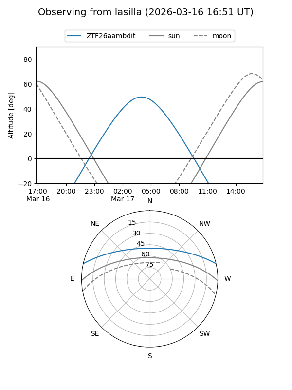
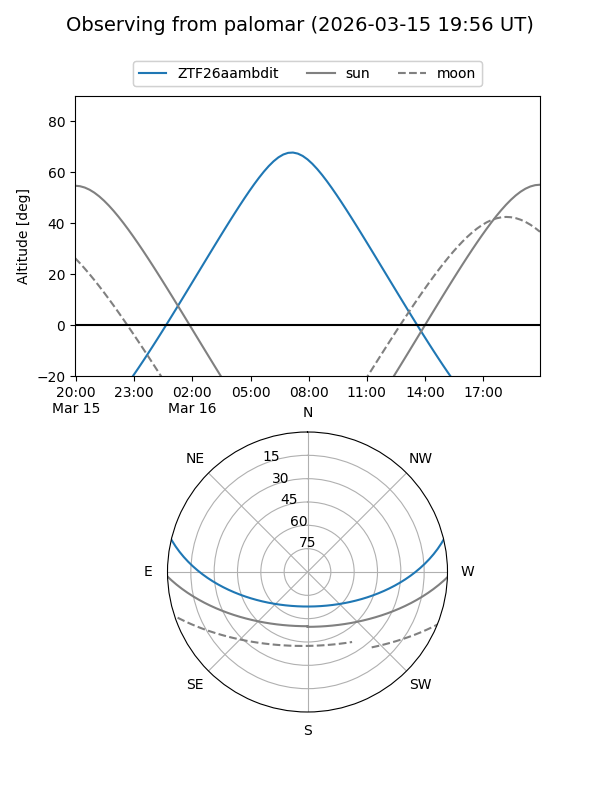

ZTF26aambdit
Target ZTF26aambdit at 2026-03-16 11:35
Aliases and brokers:
FINK: link
Lasair: link
ALeRCE: link
alt names
ZTF26aambdit (ztf,fink_ztf)
Coordinates:
equatorial (ra, dec) = 163.5048,+11.30098
equatorial (HMS+DMS) = 10:54:01.15,+11:18:03.51
galactic (l, b) = (237.0611,+58.21505)
Flags:
Photometry:
last ztfg=13.63
1 ztfg detections
Lightcurve
Visibility


Additional plots